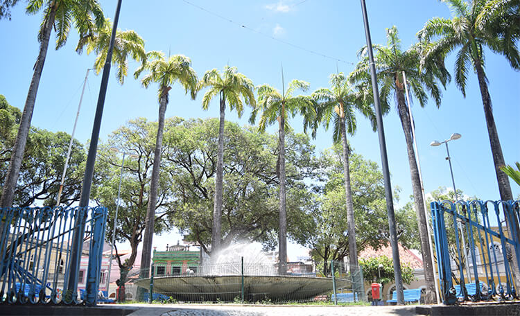

Parque das Esculturas Francisco Brennand

O Parque das Esculturas Francisco Brennand é um espaço cultural ao ar livre, localizado às margens do Rio Capibaribe. Abriga diversas obras do renomado artista pernambucano Francisco Brennand, criando um ambiente único e inspirador para os visitantes.
Praça do Arsenal
A Praça do Arsenal é um dos principais espaços públicos do Recife Antigo, situada em frente ao antigo prédio do Arsenal da Marinha. É conhecida por sua arquitetura histórica, fontes e esculturas, sendo palco de eventos culturais, feiras e apresentações artísticas.